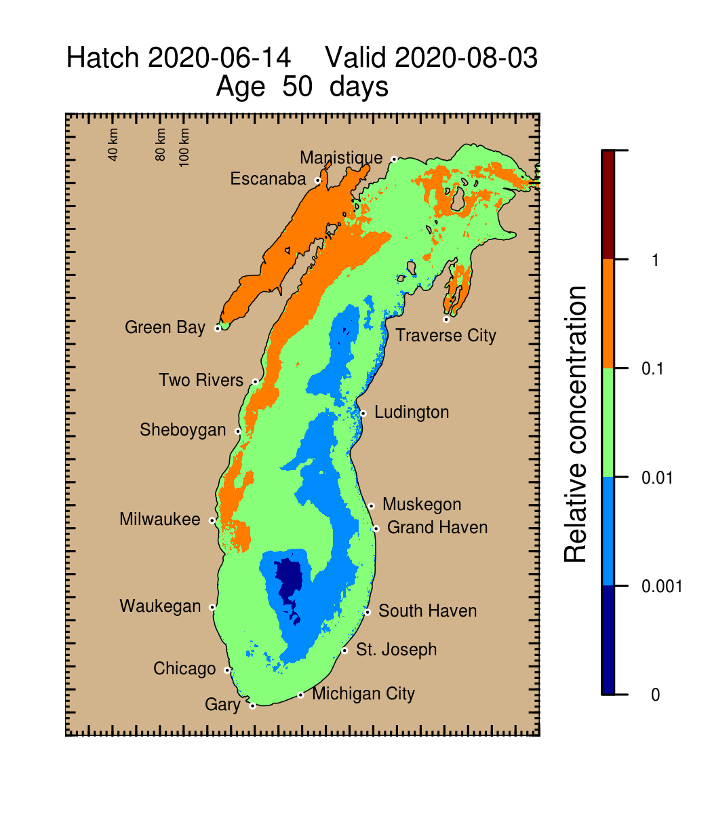

A Smithe for the 21st Century
Experienced full-stack developer, data scientist, and engineer, adept in bringing forth expertise in design, installation, testing, and maintenance of software systems. Over 10 years experience identifying efficiencies and problem areas within data streams, while communicating needs for projects. Proficient in various platforms and languages. Able to effectively self-manage during independent projects, as well as collaborate as part of a productive team. Proven ability to establish and maintain excellent communication and relationships with clients. Dedicated to identifying customer needs and delivering effective solutions to all problems.I am currently employed as a cyberinfrastructure engineer by the Great Lakes Observing System (GLOS), a North American Laruentian Great Lakes regional association under the Integrated Ocean Observing System (IOOS).
Previously, I was employed under the Cooperative Institute for Great Lakes Research (CIGLR) at the NOAA Great Lakes Environmental Research Laboratory (NOAA-GLERL) in Ann Arbor, MI.
Many thanks goes to all who (or that) have funded my work thus far. These entities include the Integrated Ocean Obeserving System, the Great Lakes Restoration Initiative, CIGLR, the International Joint Commission's International Watersheds Initiative, the US Army Corps of Engineers out of Detroit, Environment and Climate Change Canada, the Coordinating Committee on Great Lakes Basic Hydraulic and Hydrologic Data, and NOAA-GLERL.
Portfolio
ScrumAlliance.org ScrumMaster Certified
- Link to official badge
- Holding a Certified ScrumMaster® (CSM®) certification demonstrates knowledge and ability to support Scrum.
- Adheres to Scrum as it is defined in the Scrum Guide
- Facilitates Scrum events and maintains Scrum artifacts
- Works to remove team and organizational impediments
City of Saline, MI Parks Commissioner
- Vice Chair since 2024
- Aids in planning park projects and maintenance activities
- Participates in cleanup days
Condominium Association Board Member
- President since 2021
- Led association through lawsuits, complaints, and management change
AWS Certified Cloud Practioner
- With the Great Lakes Observing System
- Leverages AWS ecosystem to support GLOS operations
- User management (least privilege), storage, Lambda functions, and more
Kubernetes Application Administration
- GLOS Seagull
- Development on GitHub
- AWS CodeBuild (pull-request and merge)
- AWS Elastic Container Registry
- Terraform Infrastructure as Code
- Enabled enhanced data ingest, processing, dissemination, and metadata curation
- Monitored Kubernetes via dashboard and direct pod logs via kubectl
Wordpress Migration
- With the Coordinating Committee on Great Lakes Basic Hydraulic and Hydrologic Data
- Performed light lift and shift to WPEngine Wordpress Instance
- Empowered Coordinating Committee members

Larval Fish Dispersion Simulator
- Nowcast/forecast of potential larval fish dispersion from nearshore spawning areas in Lake Michigan
- Fully utilized a 56 core node on a Slurm Workload Manager equipped high performance computer
- Used R, and the Finite Volume Community Ocean Model's (FVCOM's) particle trajectory module in FORTRAN
- Thanks to Mark Rowe for the opportunity
Autosampler programming
- Developed, with unit testing, Python scripts and simple inputs to command a robotic autosampler (AIM4000, picture from manufacturer's website)
- Communicated and delivered operation instructions to pertinent scientists
- Many thanks to Casey Godwin for the opportunity
Large Lake Statistical Water Balance Model (L2SWBM)
- Official webpage
- Developed a Bayesian Network using the Bayesian inference Using Gibbs Sampling (BUGS) language to generate a new historical record of the Laurentian Great Lakes water balance from 1950 through 2015
- Implemented using Just Another Gibbs Sampler (JAGS) through R
- Worked closely with the bi-national International Joint Commission (IJC) and the Coordinating Committee on Great Lakes Basic Hydraulic and Hydrologic Data (CCGLBHHD) to develop, test, and deploy the model for operational use
- Many thanks to Drew Gronewold for the opportunity
Great Lakes Aquatic Nonindigenous Species Information System (GLANSIS)
- Collaboration between Michigan Sea Grant, NOAA-GLERL, The Great Lakes Aquatic Habitat Framework (GLAHF), and the United States Geological Survey's (USGS's) Wetland and Aquatic Research Center
- Modernized interface, added multiple new data tools, including the Leaflet powered Map Explorer (pictured)
- Many thanks to Rochelle Sturtevant, Matt Neilson, Lacey Mason, and Felix Martinez for their leadership in this program and for their trust in my web development and general programming expertise
Harmful Algal Bloom and Hypoxia Portal
- Collaboration between scientists, modellers, samplers, graphic designers, and web developers to best communicate the state of knowledge of HABs and Hypoxia in the great lakes
- Leaflet for mapping hyperspectral image data from regular in-season flights, Dygraphs for time-series data, PostgreSQL and PHP for storage and dissemination of real-time western Lake Erie buoy data, JavaScript for frame-by-frame interactive animations in a HAB Tracker and Hypoxia Forecast System
- Many thanks to Steve Ruberg, Tom Johengen, Mark Rowe, Eric Anderson, Danna Palladino, Ashley Burtner, Andrea VanderWoude, Dack Stuart, Russ Miller, Ron Muzzi, Ben Burns, Chris Woelkers, Craig Stow, Margaret Lansing, Nicole Rice, Kaye LaFond, and many others who make the portal possible
Great Lakes Dashboard (GLD)
- Facilitates exploratory data analysis for Laurentian Great Lakes Hydrology, Hydroclimate, and Related data
- Data sets can be overlayed to gauge water level forecast skill, for example
- Historical data available for perspective
- Available as an HTML5/JavaScript (with Dygraphs) App
- Object-Oriented design; automated updates of select data performed via R, Python, and Bash on a Unix machine
- Environmental Modelling and Software paper: Smith et al. 2016
- Sustains thousands of hits per month
- Many thanks to Drew Gronewold for this opportunity
Publications
- Nearly complete list of publications and presentations available in this ORCID profile

Contact
I reside in Saline, MI, USA, and may be reached at jpTheSmithe@gmail.com or +1-734-972-8096. Outside of main employment, I am open to small, short-term tasks of a wide variety.